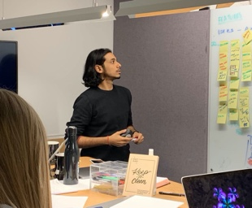

I first came across the term User Experience in 2011 while doing a design project for ABB at the Aalto Design Factory. Since, then I've learned, practiced, taught, eliminated and reused many ways to approach building an experience.
After tweaking, failing, experimenting and going through many learnings I settled in this following principles that I use to approach any design work.
User-Centered // Data-Driven // Agile // Inclusive // Evolving // Natural
While no two design challenges are same, there is an underlying structure (design process) I follow to keep me focused, resilient, creative and humble. It continues to evolve based on my own academic and professional experience + working and learning from UX thoughtleaders such as Prof. Yuvvone Rogers, Kia, Don, Jacob,;
Learning from fellow colleagues and attending UX design conferences. in continuous update with latest design patterns and trends is definitely a challenge,
While it is not a strict rule nor every project is not big enough to encompass the over-arching UX design process but I do follow it closely.
My design process:
GATHER

I begin by understanding the project brief that could be a series of emails to stakeholder workshops. The idea is to gather as much information about the following from the stakeholders:
- Context: Understanding the problem/design challenge/intend
- User: Who are the users involved/affected
- Opportunity: Understand the (business/brand) goal, objectives & proposition
- Practicalities: Scope of the project, resources available, expectations and stakeholders involved. Current research done? Past analytics?
- Other bits: Engagement with the team, resources in place, communication with the internal and external stakeholders.
DISCOVERY
Who is my competition?
This phase is about seeing what exists in the market, competitions and see what exists, go through the analytics to set hypothesis, gain user insights and
Setting hypothesis
Interacting with users
Explore Analytics
ANALYSE & EMPATHY
Persona, Empathy Mapping User journey Process maps Service blueprint
DESIGN STRATEGY
Frame the challenge Define success metrics Clarify the purpose and intent that will guide design. Create a plan to make it happenIDEATE
Diverge: Explore, develop and iterate creative ways of solving the problem, regardless of feasibility. Converge: Identify ideas that fit the next product cycle and explore them in further detail through storyboarding. Set HyopothesisDESIGN & ITERATE
Set Hyopothesis and test Test hypothesis early and often Gather feedback on multiple designs with representative users Resolve conflicting design ideas amongst project stakeholders Design and prepare prototype(s) that can be tested with people. With a clear idea of our intent, we’ll quickly move into creative thinking and design exploration. Early sketches and design ideas allow you and your customers to give feedback and direction.TRANSFORM & TEST
Lay out the track Setting out to build the new customer experience means making trade-offs and priority calls. We bring you the evidence you need to make good decisions in planning. implement, guide, support We’re in this with you. Turn ideas into reality TEST Conduct 1:1 user testing with 5-6 people from the product's primary target audience.SPRINT
Design and front-end sprints will have user testing built in, so we check our work and thinking as we progress. However your company develops software, we can plan a design approach which balances the need for speed with the goal offirst-class user experience. MEASURE & MATURE
customer, business, insight, objective Creating a plan to design engaging, authentic experiences. Outline a clear direction for all research and design activities going forward Prioritise activities based on business goals Ensure all stakeholders are aligned with key aims before moving into the design stage
hypothesis, design, evaluate, test Designing solutions that exceed expectations. Test hypothesis early and often Gather feedback on multiple designs with representative users Resolve conflicting design ideas amongst project stakeholders
DESIGN Prototype: Design and prepare prototype(s) that can be tested with people. With a clear idea of our intent, we’ll quickly move into creative thinking and design exploration. Early sketches and design ideas allow you and your customers to give feedback and direction. TRANSFORM- Lay out the track Setting out to build the new customer experience means making trade-offs and priority calls. We bring you the evidence you need to make good decisions in planning. implement, guide, support We’re in this with you. Turn ideas into reality TEST Conduct 1:1 user testing with 5-6 people from the product's primary target audience.
Sprint to greatness
Design and front-end sprints will have user testing built in, so we check our work and thinking as we progress. However your company develops software, we can plan a design approach which balances the need for speed with the goal of first-class user experience.
Mature the experience
Once the new experience is live, data and customer feedback allow you to tune and improve every aspect.